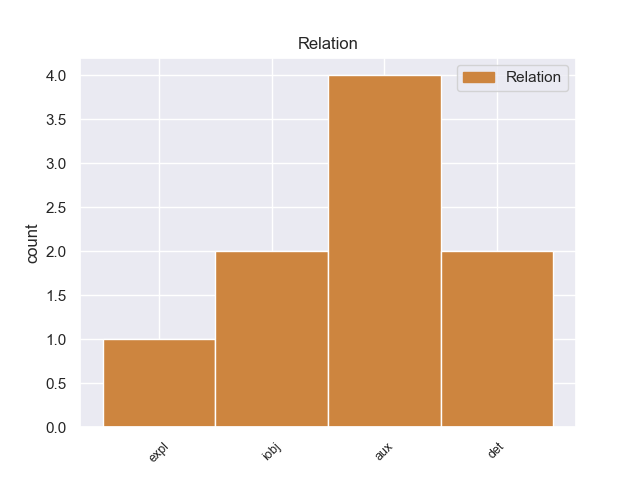
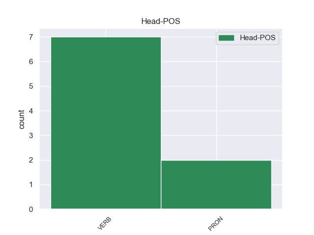
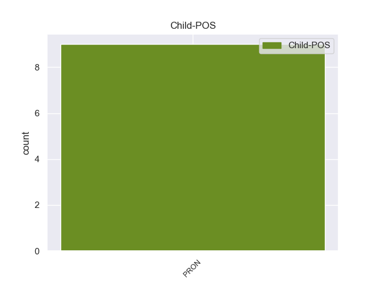

Distribution of features within this leaf



Agreement Rules sorted by frequency.
- When the dependent token is the determiner(det) of the head token, and the dependent token is PRON.
1 Αυτό αυτό PRON _ Case=Acc|Gender=Neut|Number=Sing|Person=3|PronType=Dem 3 det _ _
2 είναι _ _ _ _ 0 _ _ _
3 κάτι κάτι PRON _ Case=Acc|Gender=Neut|Number=Sing|Person=3|PronType=Dem 0 _ _ _
4 που _ _ _ _ 0 _ _ _
5 , _ _ _ _ 0 _ _ _
6 φοβάμαι _ _ _ _ 0 _ _ _
7 , _ _ _ _ 0 _ _ _
8 θα _ _ _ _ 0 _ _ _
9 χαρακτηρίσει _ _ _ _ 0 _ _ _
10 ολοένα _ _ _ _ 0 _ _ _
11 και _ _ _ _ 0 _ _ _
12 περισσότερο _ _ _ _ 0 _ _ _
13 την _ _ _ _ 0 _ _ _
14 προεδρία _ _ _ _ 0 _ _ _
15 σας _ _ _ _ 0 _ _ _
16 , _ _ _ _ 0 _ _ _
17 αλλά _ _ _ _ 0 _ _ _
18 θα _ _ _ _ 0 _ _ _
19 έχουμε _ _ _ _ 0 _ _ _
20 ολοένα _ _ _ _ 0 _ _ _
21 και _ _ _ _ 0 _ _ _
22 περισσότερες _ _ _ _ 0 _ _ _
23 ευκαιρίες _ _ _ _ 0 _ _ _
24 να _ _ _ _ 0 _ _ _
25 λαμβάνουμε _ _ _ _ 0 _ _ _
26 σκληρές _ _ _ _ 0 _ _ _
27 αποφάσεις _ _ _ _ 0 _ _ _
28 . _ _ _ _ 0 _ _ _
1 Επειδή _ _ _ _ 0 _ _ _
2 απλά _ _ _ _ 0 _ _ _
3 το _ _ _ _ 0 _ _ _
4 θεωρούν _ _ _ _ 0 _ _ _
5 δύσκολο _ _ _ _ 0 _ _ _
6 , _ _ _ _ 0 _ _ _
7 επειδή _ _ _ _ 0 _ _ _
8 πιστεύουν _ _ _ _ 0 _ _ _
9 ότι _ _ _ _ 0 _ _ _
10 τους εγώ PRON PRON Case=Gen|Gender=Masc|Number=Plur|Person=3|PronType=Prs 11 iobj _ _
11 κοστίζει κοστίζω VERB VERB Aspect=Imp|Mood=Ind|Number=Sing|Person=3|Tense=Pres|VerbForm=Fin|Voice=Act 0 _ _ _
12 χρήματα _ _ _ _ 0 _ _ _
13 - _ _ _ _ 0 _ _ _
14 πιθανόν _ _ _ _ 0 _ _ _
15 επειδή _ _ _ _ 0 _ _ _
16 δεν _ _ _ _ 0 _ _ _
17 θέλουν _ _ _ _ 0 _ _ _
18 να _ _ _ _ 0 _ _ _
19 συμμορφωθούν _ _ _ _ 0 _ _ _
20 με _ _ _ _ 0 _ _ _
21 όλες _ _ _ _ 0 _ _ _
22 τις _ _ _ _ 0 _ _ _
23 απαιτήσεις _ _ _ _ 0 _ _ _
24 - _ _ _ _ 0 _ _ _
25 θέλουν _ _ _ _ 0 _ _ _
26 περισσότερη _ _ _ _ 0 _ _ _
27 διακριτικότητα _ _ _ _ 0 _ _ _
28 ώστε _ _ _ _ 0 _ _ _
29 να _ _ _ _ 0 _ _ _
30 μην _ _ _ _ 0 _ _ _
31 συνάπτονται _ _ _ _ 0 _ _ _
32 οι _ _ _ _ 0 _ _ _
33 συμβάσεις _ _ _ _ 0 _ _ _
34 σε _ _ _ _ 0 _ _ _
35 ανοικτή _ _ _ _ 0 _ _ _
36 βάση _ _ _ _ 0 _ _ _
37 . _ _ _ _ 0 _ _ _
1 Κύριε _ _ _ _ 0 _ _ _
2 Πρόεδρε _ _ _ _ 0 _ _ _
3 , _ _ _ _ 0 _ _ _
4 υποθέτω _ _ _ _ 0 _ _ _
5 ότι _ _ _ _ 0 _ _ _
6 θα _ _ _ _ 0 _ _ _
7 μου μου PRON _ Case=Acc|Gender=Neut|Number=Sing|Person=3|PronType=Prs 8 aux _ _
8 αφαιρέσετε αφαιρέώ VERB _ Aspect=Perf|Mood=Ind|Number=Sing|Person=3|VerbForm=Fin|Voice=Act 0 _ _ _
9 τον _ _ _ _ 0 _ _ _
10 χρόνο _ _ _ _ 0 _ _ _
11 όλων _ _ _ _ 0 _ _ _
12 αυτών _ _ _ _ 0 _ _ _
13 των _ _ _ _ 0 _ _ _
14 κραυγών _ _ _ _ 0 _ _ _
15 . _ _ _ _ 0 _ _ _
Disagree Examples:
1 Εμείς _ _ _ _ 0 _ _ _
2 σ _ _ _ _ 0 _ _ _
3 την _ _ _ _ 0 _ _ _
4 Αυστρία _ _ _ _ 0 _ _ _
5 το εγώ PRON PRON Case=Acc|Gender=Neut|Number=Sing|Person=3|PronType=Prs 6 expl _ _
6 αποκαλούμε αποκαλώ VERB VERB Aspect=Imp|Mood=Ind|Number=Plur|Person=1|Tense=Pres|VerbForm=Fin|Voice=Act 0 _ _ _
7 αυτό _ _ _ _ 0 _ _ _
8 " _ _ _ _ 0 _ _ _
9 η _ _ _ _ 0 _ _ _
10 αρχή _ _ _ _ 0 _ _ _
11 του _ _ _ _ 0 _ _ _
12 Florian _ _ _ _ 0 _ _ _
13 " _ _ _ _ 0 _ _ _
14 : _ _ _ _ 0 _ _ _
1 Αλλά _ _ _ _ 0 _ _ _
2 εδώ _ _ _ _ 0 _ _ _
3 η _ _ _ _ 0 _ _ _
4 ειδική _ _ _ _ 0 _ _ _
5 φύση _ _ _ _ 0 _ _ _
6 της _ _ _ _ 0 _ _ _
7 κατάστασης _ _ _ _ 0 _ _ _
8 μας εγώ PRON PRON Case=Acc|Gender=Masc|Number=Plur|Person=1|PronType=Prs 9 iobj _ _
9 οδήγησε οδηγώ VERB VERB Aspect=Perf|Mood=Ind|Number=Sing|Person=3|Tense=Past|VerbForm=Fin|Voice=Act 0 _ _ _
10 να _ _ _ _ 0 _ _ _
11 πιστεύουμε _ _ _ _ 0 _ _ _
12 σθεναρά _ _ _ _ 0 _ _ _
13 ότι _ _ _ _ 0 _ _ _
14 ένας _ _ _ _ 0 _ _ _
15 κανόνας _ _ _ _ 0 _ _ _
16 ειδικά _ _ _ _ 0 _ _ _
17 για _ _ _ _ 0 _ _ _
18 τον _ _ _ _ 0 _ _ _
19 τομέα _ _ _ _ 0 _ _ _
20 θα _ _ _ _ 0 _ _ _
21 ήταν _ _ _ _ 0 _ _ _
22 πιο _ _ _ _ 0 _ _ _
23 κατάλληλος _ _ _ _ 0 _ _ _
24 . _ _ _ _ 0 _ _ _
1 Θα _ _ _ _ 0 _ _ _
2 ήθελα _ _ _ _ 0 _ _ _
3 να _ _ _ _ 0 _ _ _
4 πω _ _ _ _ 0 _ _ _
5 σ _ _ _ _ 0 _ _ _
6 τον _ _ _ _ 0 _ _ _
7 κ. _ _ _ _ 0 _ _ _
8 Zappala _ _ _ _ 0 _ _ _
9 ότι _ _ _ _ 0 _ _ _
10 έχει _ _ _ _ 0 _ _ _
11 περάσει _ _ _ _ 0 _ _ _
12 ο _ _ _ _ 0 _ _ _
13 καιρός _ _ _ _ 0 _ _ _
14 που _ _ _ _ 0 _ _ _
15 μπορούσαμε _ _ _ _ 0 _ _ _
16 να _ _ _ _ 0 _ _ _
17 λαμβάνουμε _ _ _ _ 0 _ _ _
18 υπόψη _ _ _ _ 0 _ _ _
19 αποκλειστικά _ _ _ _ 0 _ _ _
20 οικονομικά _ _ _ _ 0 _ _ _
21 κριτήρια _ _ _ _ 0 _ _ _
22 και _ _ _ _ 0 _ _ _
23 ότι _ _ _ _ 0 _ _ _
24 η _ _ _ _ 0 _ _ _
25 Συνθήκη _ _ _ _ 0 _ _ _
26 ΕΚ _ _ _ _ 0 _ _ _
27 μας μας PRON _ Case=Gen|Gender=Masc|Number=Plur|Person=1|Poss=Yes|PronType=Prs 28 aux _ _
28 υποχρεώνει υποχρεώνει VERB _ Aspect=Imp|Mood=Ind|Number=Sing|Person=3|Tense=Pres|VerbForm=Fin|Voice=Act 0 _ _ _
29 σ _ _ _ _ 0 _ _ _
30 την _ _ _ _ 0 _ _ _
31 πράξη _ _ _ _ 0 _ _ _
32 να _ _ _ _ 0 _ _ _
33 λαμβάνουμε _ _ _ _ 0 _ _ _
34 υπόψη _ _ _ _ 0 _ _ _
35 τις _ _ _ _ 0 _ _ _
36 κοινωνικές _ _ _ _ 0 _ _ _
37 και _ _ _ _ 0 _ _ _
38 περιβαλλοντικές _ _ _ _ 0 _ _ _
39 πτυχές _ _ _ _ 0 _ _ _
40 από _ _ _ _ 0 _ _ _
41 κοινού _ _ _ _ 0 _ _ _
42 με _ _ _ _ 0 _ _ _
43 τους _ _ _ _ 0 _ _ _
44 οικονομικούς _ _ _ _ 0 _ _ _
45 παράγοντες _ _ _ _ 0 _ _ _
46 . _ _ _ _ 0 _ _ _
1 Το _ _ _ _ 0 _ _ _
2 αποτέλεσμα _ _ _ _ 0 _ _ _
3 αυτών _ _ _ _ 0 _ _ _
4 των _ _ _ _ 0 _ _ _
5 μακρών _ _ _ _ 0 _ _ _
6 συζητήσεων _ _ _ _ 0 _ _ _
7 ήταν _ _ _ _ 0 _ _ _
8 ότι _ _ _ _ 0 _ _ _
9 η _ _ _ _ 0 _ _ _
10 εφαρμογή _ _ _ _ 0 _ _ _
11 της _ _ _ _ 0 _ _ _
12 αρχής _ _ _ _ 0 _ _ _
13 της _ _ _ _ 0 _ _ _
14 αναλογικότητας _ _ _ _ 0 _ _ _
15 μας μας PRON _ Case=Gen|Gender=Masc|Number=Plur|Person=1|Poss=Yes|PronType=Prs 16 aux _ _
16 βρίσκει βρίσκω VERB _ Aspect=Imp|Mood=Ind|Number=Sing|Person=3|Tense=Pres|VerbForm=Fin|Voice=Act 0 _ _ _
17 όλους _ _ _ _ 0 _ _ _
18 καταρχήν _ _ _ _ 0 _ _ _
19 σύμφωνους _ _ _ _ 0 _ _ _
20 , _ _ _ _ 0 _ _ _
21 αλλά _ _ _ _ 0 _ _ _
22 σ _ _ _ _ 0 _ _ _
23 την _ _ _ _ 0 _ _ _
24 περίπτωση _ _ _ _ 0 _ _ _
25 που _ _ _ _ 0 _ _ _
26 θα _ _ _ _ 0 _ _ _
27 επιμείνει _ _ _ _ 0 _ _ _
28 το _ _ _ _ 0 _ _ _
29 Κοινοβούλιο _ _ _ _ 0 _ _ _
30 θα _ _ _ _ 0 _ _ _
31 τεθεί _ _ _ _ 0 _ _ _
32 σε _ _ _ _ 0 _ _ _
33 λειτουργία _ _ _ _ 0 _ _ _
34 μια _ _ _ _ 0 _ _ _
35 διαφανής _ _ _ _ 0 _ _ _
36 διαδικασία _ _ _ _ 0 _ _ _
37 . _ _ _ _ 0 _ _ _
1 Το _ _ _ _ 0 _ _ _
2 άρθρο _ _ _ _ 0 _ _ _
3 9 _ _ _ _ 0 _ _ _
4 του _ _ _ _ 0 _ _ _
5 Πρωτοκόλλου _ _ _ _ 0 _ _ _
6 , _ _ _ _ 0 _ _ _
7 όπως _ _ _ _ 0 _ _ _
8 επεσήμανε _ _ _ _ 0 _ _ _
9 με _ _ _ _ 0 _ _ _
10 αυστηρότητα _ _ _ _ 0 _ _ _
11 η _ _ _ _ 0 _ _ _
12 Πρόεδρος _ _ _ _ 0 _ _ _
13 Fontaine _ _ _ _ 0 _ _ _
14 σ _ _ _ _ 0 _ _ _
15 τον _ _ _ _ 0 _ _ _
16 Εισαγγελέα _ _ _ _ 0 _ _ _
17 , _ _ _ _ 0 _ _ _
18 μας μας PRON _ Case=Gen|Gender=Masc|Number=Plur|Person=1|Poss=Yes|PronType=Prs 19 aux _ _
19 απαλλάσσει απαλλάσσει VERB _ Aspect=Imp|Mood=Ind|Number=Sing|Person=3|Tense=Pres|VerbForm=Fin|Voice=Act 0 _ _ _
20 τελείως _ _ _ _ 0 _ _ _
21 από _ _ _ _ 0 _ _ _
22 οποιαδήποτε _ _ _ _ 0 _ _ _
23 νομική _ _ _ _ 0 _ _ _
24 διαδικασία _ _ _ _ 0 _ _ _
25 σε _ _ _ _ 0 _ _ _
26 σχέση _ _ _ _ 0 _ _ _
27 με _ _ _ _ 0 _ _ _
28 την _ _ _ _ 0 _ _ _
29 έκφραση _ _ _ _ 0 _ _ _
30 γνώμης _ _ _ _ 0 _ _ _
31 ή _ _ _ _ 0 _ _ _
32 ψήφου _ _ _ _ 0 _ _ _
33 κατά _ _ _ _ 0 _ _ _
34 την _ _ _ _ 0 _ _ _
35 άσκηση _ _ _ _ 0 _ _ _
36 των _ _ _ _ 0 _ _ _
37 καθηκόντων _ _ _ _ 0 _ _ _
38 μας _ _ _ _ 0 _ _ _
39 ως _ _ _ _ 0 _ _ _
40 μέλη _ _ _ _ 0 _ _ _
41 αυτού _ _ _ _ 0 _ _ _
42 του _ _ _ _ 0 _ _ _
43 Κοινοβουλίου _ _ _ _ 0 _ _ _
44 . _ _ _ _ 0 _ _ _